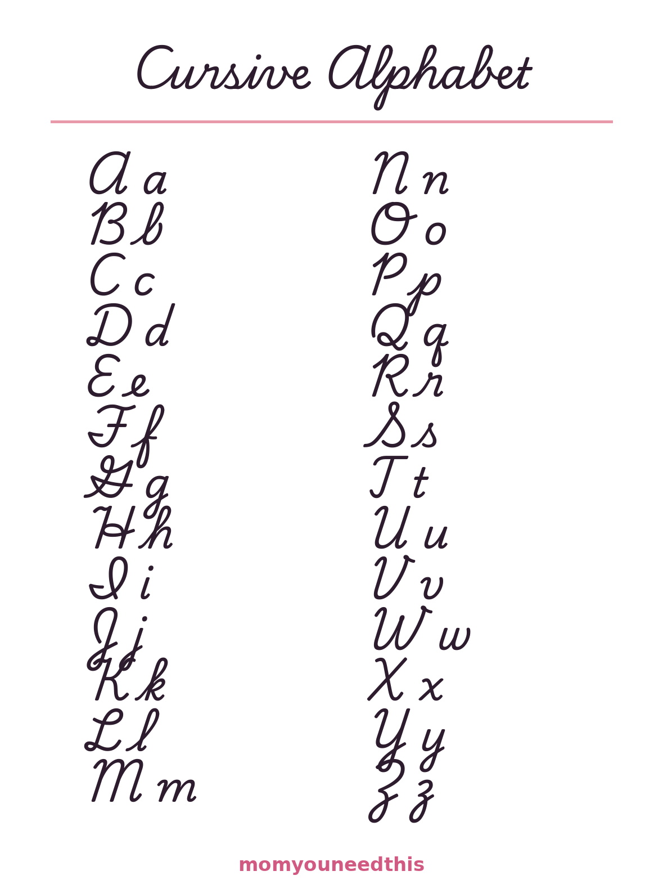

Cursive Alphabet Chart & Worksheets
This cursive alphabet chart shows every letter from A to Z — uppercase and lowercase — in traditional cursive, on one free printable page. Print it, prop it up where your child writes, and let them use it as their reference while they learn: which letters loop, which ones dive below the line, and how each letter connects to the next. The chart is made for children roughly ages 6 to 8, in grades 1 to 3, who can already print their letters and are ready for the next step. Below the chart you will find how to use it, how the letters group into families, and what to practice first. More cursive worksheets — a practice page for every letter — are on the way. Everything is free, with no signup.
Last updated: October 20, 2026
Quick Answer
This page gives you one free printable chart with every cursive letter from A to Z — uppercase and lowercase — in traditional US school cursive, plus simple guidance on how kids learn the strokes. Print it for the wall or desk. Made for ages 6–8, grades 1–3, no signup.
At a Glance
- Ages: 6–8 (grades 1–3)
- What you get: 1 printable cursive chart (A–Z, uppercase + lowercase), plus practice guidance
- Style: Traditional US school cursive
- Cost: Free — no signup, no email

🖨️ Print Your Free Chart
Open the chart and print it at 100% on letter-size paper. Hang one copy at eye level where your child does homework, and keep a second copy flat on the desk — kids use a chart far more when it is right in front of them, not filed away.
⬇️ Open Free Printable 🖨️ Print🎁 Free printable for ages 6–8 — no signup needed
📖 How to Use the Chart
A chart on the wall only helps if your child actually uses it. These four habits turn it from decoration into a learning tool.
- Start with their name. The letters in your child's own name are the ones they care about most. Find each one on the chart together, say its name, and trace its shape in the air before anyone picks up a pencil.
- Trace before writing. Have your child trace a letter on the chart with a finger, following the same path the pencil will take. Big, slow movements teach the stroke pattern; neat small writing comes later.
- Keep it open during homework. When your child writes anything — homework, a birthday card, a label for a drawing — the chart sits beside the paper. Looking a letter up is not cheating; it is exactly how the skill gets learned.
- Print a copy they can write on. Slip a second copy into a dry-erase sleeve or laminate it, and your child can trace over the letters with a whiteboard marker, wipe it clean, and start again.
Expect the chart to get the most use in the first few months. Over time your child will glance at it less and less — first only for the tricky capitals, then hardly at all. That fading is the sign the letters have moved from the page into memory, which is the whole point.
🔤 The Full Cursive Alphabet, Uppercase and Lowercase
Here is the whole alphabet as it appears on the chart — every capital letter with its lowercase partner.
Aa Bb Cc Dd Ee Ff Gg Hh Ii Jj Kk Ll Mm
Nn Oo Pp Qq Rr Ss Tt Uu Vv Ww Xx Yy Zz
Capitals: A B C D E F G H I J K L M N O P Q R S T U V W X Y Z
Lowercase: a b c d e f g h i j k l m n o p q r s t u v w x y z
Some cursive letters look almost like their print versions, but a handful will surprise your child — and those are the ones worth pointing out early. The traditional capital Q looks a bit like a fancy number 2. Capital Z is not the zigzag they know; it has a loop and a tail. Capital G and F are much more elaborate than in print. Among the lowercase letters, b, f, k, r and z all have their own distinctive shapes, and several letters — j, g, y, p and f — dive below the writing line and come back up. Every letter also starts and ends with a small connecting stroke, because cursive letters are designed to join together inside a word instead of standing apart.
🌱 How Kids Learn Cursive Best
Cursive looks complicated, but children learn it the same way they learned to print: a little at a time, with lots of repetition. Short daily practice — around ten minutes — works far better than one long weekly session, because the hand remembers movements it repeats often. Stop before frustration sets in, and finish with a letter your child already does well.
The secret that makes cursive manageable is that the letters are not 52 separate shapes. Most lowercase letters begin with one of a few shared starting strokes, so teachers introduce them in families. One family starts with a small curve, like c, and grows into a, d, g and q. Another swings up and comes straight back down, like i, u and w. The tall loop family — e, l, h, k and b — all climb to the top line and loop back. When a child learns a new letter, they are often reusing a movement they already know with one small change, which is why progress speeds up after the first few letters.
Start big before you go small: letters drawn in the air, on a whiteboard, or with a finger in a tray of salt are easier than letters squeezed between pencil lines. Check the basics once — pencil held lightly between thumb and two fingers, paper tilted slightly (to the left for right-handers, to the right for left-handers) — then let practice do the teaching. And give practice a purpose as early as you can: writing their own name in cursive, labeling their things, or signing a card motivates children far more than rows of drills. Guided cursive handwriting practice sheets for individual letters are in the works for this page — see what is coming next below.
🗺️ What's Next for Cursive Practice
The chart is the first step on this page, not the last. Next come the cursive practice sheets — one sheet per letter, with guided letters to trace and empty lines for writing independently. After the single letters, practice moves to joined words: your child's name, the days of the week, and short sentences. Joined-word practice pages are being built now and will be added here as they are finished, free like everything else on the site. In the meantime, the chart plus the practice sheets are enough to begin. This page is part of the Older Kids section, where bigger-kid topics live — you can also browse the Learning Activities for younger siblings, or revisit Letter Recognition Activities if your child still needs print-letter practice first.
❓ Frequently Asked Questions
What age should a child start cursive?
Most children start cursive between ages 6 and 8, in grades 1 to 3 — after they can print their letters comfortably and hold a pencil with a steady grip. Many US schools introduce it in second or third grade. If your child is curious about the loopy letters they see in cards and notes, that curiosity is a good sign they are ready to start.
Is the cursive alphabet chart free?
Yes — the chart on this page is completely free to print at home. No signup, no account and no email. Print as many copies as your family needs: one for the wall, one for the writing desk, one for practice.
Should kids learn uppercase or lowercase cursive first?
Most teachers start with lowercase letters. Lowercase letters appear far more often in everyday writing, and many of them share the same starting strokes, so children can learn them in families. Uppercase letters usually come after, once lowercase feels comfortable — capitals are mostly needed for names and the start of sentences.
What style of cursive is this?
The chart uses traditional US school cursive — the classic looped style that has been taught in American classrooms for generations, with the traditional capital letters. It is the style children will see in most school materials, workbooks and handwritten notes.
How do I print the chart?
Open the chart with the buttons above and print it at 100% on a standard letter-size page. Regular printer paper works fine for practice copies; a heavier paper or cardstock lasts longer if the chart will live on a wall or desk as a reference.